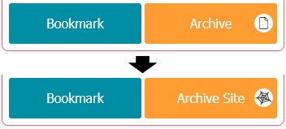
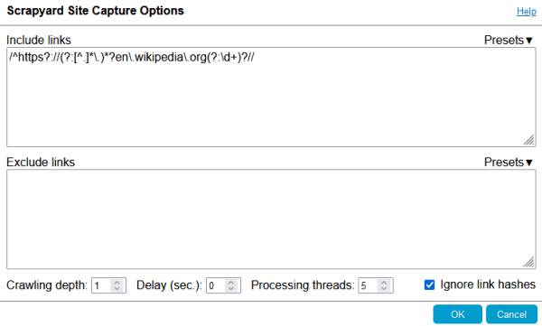
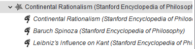
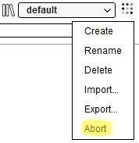

What is Scrapyard?
Scrapyard is a bookmarking extension where you can store and organize bookmarks, page fragments, complete HTML pages and PDF documents, or take notes. All archived content is accessible on the Android platform if shared through a cloud service. It is possible to export and import bookmarks in JSON or org-mode formats. Scrapyard also supports the import of RDF archives of the legacy ScrapBook addon.
Where to Find Scrapyard
Scrapyard is accessible through the dropdown menu of the Firefox sidebar as shown in the image below.

In Chrome, Scrapyard could be opened in a separate window through the  button in the popup dialog.
button in the popup dialog.
The Alt+Y keyboard shortcut allows to open Scrapyard directly.
Keyboard shortcuts provided by any extension could be
customized in the browser settings.
Getting Started
IMPORTANT: Scrapyard version 2 stores the archived content in the filesystem. Please see the transition manual from the Scrapyard version 1.
1. Installing the Helper Application
Scrapyard requires the native helper application to access the filesystem. Please install the helper application using one of the download links provided in the Helper App options tab.
2. Specifying the Data Directory Path
Specify the data directory path at the Settings tab. Use the path <your cloud folder>/Apps/Scrapyard/Sync to make Scrapyard content available on mobile devices. Only content shared through Dropbox or OneDrive could be browsed with the Scrapyard application for Android.
A limited subset of functionality is available without the helper application if the "Content location" option in the main settings page is set to "Browser internal storage" (not available if content transfer is required). Please use this mode only in the cases when the amount of archived content is relatively small.
Main Features
Capturing Pages
To capture a web page or its fragment, select the part of the page you want to archive, open the Scrapyard popup dialog by clicking its icon on the browser toolbar, choose the destination shelf and folder, then press the "Bookmark" or "Archive" button. The "Bookmark" button stores only web-page URLs as bookmarks. The "Archive" button captures the current selection, the whole page, if there is no active selection, or the whole document, if the opened link is not a web-page (for example, a PDF file).
In the bookmark tree, archived pages are marked with italic font, while ordinary bookmarks have the regular one. It is possible to additionally emphasize archives by enabling the corresponding add-on settings.

The following keyboard shortcuts allow to quickly capture the active tab into the default bookmark shelf:
Alt+Q- bookmark the current tab to the default shelf.Alt+W- archive the current tab or selection to the default shelf.
If these shortcuts are already overridden by some other add-on, they could be customized in Firefox settings. There is an option to open the sidebar automatically when bookmarking from keyboard.
Capturing Sites
To create an offline copy of a website, enable the site capture mode by clicking on the white circle icon inside the "Archive" button.

A click on the "Archive Site" button will display the site capture options dialog:

Read more about site capture options
The captured pages are placed in a dedicated folder with the spider web icon. A click on the folder name opens the first page stored inside it. All linked pages in this folder refer to each other through the special ext+scrapyard:// URLs.

To abort the ongoing capture process, use the corresponding item from the sidebar shelf menu:

Archive Toolbar
Every archived page contains a toolbar that offers several types of text markers to highlight sections of interest. The "Auto open" check makes the marker menu to open automatically when some text is selected. The "Edit document" button allows to clean the document of unnecessary elements by direct editing of its content. It is also possible to type in something, press F7 to display the caret. The DOM Eraser tool is able to remove any element on the page with a single click. The HTML code of a page may also be manually modified through the browser developer tools accessible through the F12 keyboard key. Press the "Save" button after you have finished document editing.
The size of a saved page in bytes and its creation date are available through the page info icon at the right-most toolbar side.

There is an option to not display the editing toolbar automatically.
The toolbar always could be toggled by the Ctrl+Alt+T key combination.
Bookmark Shelves
It is possible to create an unlimited amount of bookmark shelves to structure your bookmarks. The shelf named "everything" allows to browse and search through all existing bookmarks. Scrapyard built-in shelves are listed in bold font and cannot be deleted or renamed.

If you mistakenly deleted a bookmark or even an entire shelf, it is possible to revert the deletion using the "Undo" item of the shelf menu . The undo operation is available until the browser is restarted or some other operation is performed.
TODO
It may be convenient to prioritize your bookmarks for processing with TODO states. Each bookmark may have one of the following TODO priorities: TODO, WAITING, or POSTPONED. You may find all your prioritized bookmarks at the built-in shelf named TODO. All bookmarks marked as DONE or CANCELLED are displayed on the DONE shelf.

If the path of the bookmark folder above its title provides not enough context, it is possible to fill the "Details" and "Date" fields at the bookmark property dialog. Only ISO (YYYY-MM-DD) date format is supported. Expired TODO items will be displayed first regardless of the assigned state.
Browser Bookmarks
Scrapyard seamlessly integrates with the browser bookmarks, so there is no need to switch to the built-in bookmark manager. Browser bookmarks are not included in the export or backups.

Cloud Bookmarking
Adding or copying/pasting bookmarks into a special shelf named Cloud makes them available across different browser instances that use a cloud provider with the same credentials. Cloud providers are configurable in the addon settings. It is possible to authorize in several cloud providers and quickly switch between them (currently only Dropbox and OneDrive are supported).
Scrapyard application for Android allows to save links and text into the Cloud shelf from mobile devices, and to browse contents of this shelf. See the corresponding section below for more details.
It is not necessary to install native cloud clients on any OS to use the cloud shelf. Just a Dropbox or a personal Microsoft account is required.

Sharing Bookmarks
A bookmark or archive could be shared to either Pocket or a cloud service through the "Share" context menu. Files that are shared to Dropbox or OneDrive appear at the "Apps/Scrapyard" folder. Only links could be shared to the Pocket application. The "Cloud" menu item copies any selected items to the Scrapyard Cloud shelf.

Firefox Multi-Account Containers
Any Scrapyard bookmark could be opened in one of the Firefox Multi-Account containers, available through the "Open in Container" context menu of a bookmark, archive, or folder. Scrapyard will open the original URL of an archive with this menu, and all the items located inside a folder, if a folder is selected.

Additionally, it is possible to assign a container to a bookmark in its property dialog, as
it is shown in the image below. Such bookmarks will automatically open in the corresponding
container.

Bookmark Comments
While the "Details" field in the bookmark properties is intended for display at the TODO shelf, the bookmark property dialog also allows entering quick comments by clicking on the "callout" icon at its top-right corner.

Subsequent clicks on the icon alternate between the comment input field and bookmark properties.
The comment icon of bookmarks with filled-in comments takes the form of a "filled callout".

Notes
It is possible to attach more elaborate text notes with hyperlinks and images to every bookmark, or even create dedicated note-only bookmarks. Click "New" > "(Attached) Notes" in the context menu of a folder, bookmark, or archive to create a note-only bookmark or attach notes. Items with non-empty notes are highlighted by the underlined text in the bookmark tree.

Notes could be entered in rich text format (using a visual editor), Markdown, Org-mode markup, or plain text. The format selector dropdown list is located in the bottom left corner of the "Edit" tab. Notes in Org format may have an automatically generated table of contents. Insert the example markup into the note editor to explore what options are available.
The text in the note editor is saved automatically, although you may save it at any time with the Ctrl+S
keyboard shortcut.
Referencing to a bookmark or archive (Firefox only)
To make a reference to a Scrapyard bookmark or archive from the note markup, create a link with the following URL:
ext+scrapyard://<BOOKMARK UUID>, for example:
ext+scrapyard://A4D409A0D1034D9BA0863E9DA8CE8FE7
When necessary, it is possible to add a hash with a link description:
ext+scrapyard://A4D409A0D1034D9BA0863E9DA8CE8FE7#short-bookmark-description
To refer the notes of a bookmark add notes: before the UUID:
ext+scrapyard://notes:A4D409A0D1034D9BA0863E9DA8CE8FE7
UUID of a bookmark is available from its property dialog:

Search
Sidebar Filtering
The input field at the Scrapyard sidebar allows filtering bookmarks of the current shelf by content and various other attributes:

Use the "Everything" search mode (default) to filter bookmarks by all available attributes. Use the "Everything" shelf to search through all bookmarks. Although the Sidebar filter is reasonably fast, it matches all items that contain every entered word longer than two characters in any order and distance. Use the full-text search if you need exact results.
Filtering by date supports simple queries:
- 2020-02-20 - the exact date.
- before 2020-02-20 - before the specified date (the specified date is not included).
- after 2020-02-20 - after the specified date (the specified date is not included).
- between 2020-02-20 and 2020-03-20 - between the specified dates (the specified dates are included).
Search from URL-bar
It is possible to search through all bookmarks by title or URL from the browser URL-bar after entering the special "scr" keyword followed by a space:

If URL-bar search query begins with a plus sign (+), Scrapyard will interpret the rest of the
text as a tag name and will search by tags instead. It is possible to activate browser URL-bar
with the Ctrl+L keyboard shortcut.

Full-Text Search
Full-text search is accessible with the corresponding sidebar button:
 .
It allows to find and highlight the exact occurrences of a phrase in the content of
archived HTML pages.
.
It allows to find and highlight the exact occurrences of a phrase in the content of
archived HTML pages.

Import/Export
Scrapyard allows importing bookmarks in Netscape HTML format which you may obtain from Firefox, Chrome, or other web-browsers. Its own collections of bookmarks and archived pages could also be exported or imported in JSON and ORG formats through the corresponding items of the shelf operations menu:

Importing Legacy ScrapBook RDF Archives
RDF archives could be imported from the corresponding options tab. There are two import modes:
- Import RDF to Scrapyard. In this mode, the archived files are transferred into the scrapyard storage directory. After the import, the original RDF folder is not necessary to access the imported archives from Scrapyard.
- Open RDF for editing. Import in this mode only recreates the RDF directory structure in the Scrapyard internal browser storage. The archived ScrapBook files are served from their original RDF folder.
The recent import mode may be useful for arranging the contents of an RDF archive before the full import (RDF editing is available on Firefox only). Shelves imported in the editing mode are marked with a tape reel icon. It is possible to add new archives to these shelves and physically delete RDF entries along with the attached files (this could not be undone). Some features, such as bookmark transferring or copying are not available for the shelves imported in the editing mode.
It is possible to edit the path of the imported RDF file through the "RDF Directory..." context menu item of a shelf.

Link Checker
The automatic link checker allows finding broken links or URL duplicates. Its mode of operation may be selected through the "Check for" dropdown list. Since different archived page fragments may share the same original URL, link checker results in the "check for duplicates" mode may not always mean the duplication of content. Please check the duplicate bookmarks before deleting them.

Displaying Random Bookmarks
Random bookmarks from your collection could be displayed at the bottom of the Scrapyard sidebar. Check the corresponding option in the settings to enable this feature. The displayed bookmark is changed every 5 minutes, it also could be updated by a user request through the "Refresh" button. The "Find" button allows locating the bookmark at the Scrapyard sidebar by opening its shelf and folder.

Saving Links and Content from Mobile Applications
Scrapyard application for Android allows saving links and content into the Scrapyard Cloud shelf from mobile devices. It uses the standard Android sharing functionality, which may be tricky to deal with, as it is shown in the examples below.
At first, you need to enable cloud shelf in Scrapyard by checking the corresponding option at the "Cloud" setting tab and sign into a cloud service. The bookmarks also may be shared into the default Sync shelf, if synchronization is enabled, although it is recommended to use the cloud shelf for the sharing from mobile devices.
Then you need to install the Scrapyard application on your device and sign into the same cloud service account from its "Cloud Providers" screen.
To share a link from the application of choice, find and tap the "Share" button or the "Share" menu item in it. The example below highlights the "Share" button in the mobile Firefox application.

After that, you need to select the destination application to send the URL into. The interface may differ from app to app, and you may need to scroll or press additional buttons to find the necessary sharing target. The icon of the Scrapyard Android application is highlighted in the image below. Tap on it and you are done.

Sharing of text is usually performed from the corresponding selection toolbar:

It is only possible to share plain text without links and images from the Android platform. Generally, selected text is shared to Scrapyard in the form of notes without a source URL. To save source URL, share text from the Pocket app or the recent versions of Chrome browser.
The application also offers basic browsing functionality for the Cloud shelf and synchronized bookmarks. Bookmarks, archived pages, and notes could be opened directly. Archived PDF documents and other binary files could be downloaded to the device storage memory. There is a long-tap context menu which allows to view attached notes and delete bookmarks and folders.

Text Command Interface
It is possible to issue commands to Scrapyard through the text command interface offered by iShell Extension. To control Scrapyard with text commands just install iShell. In most cases, the command interface allows to significantly reduce the number of actions needed to create a bookmark or to archive a page.
The "shelf" Command
With the "shelf" command you can quickly switch to a shelf or folder, or even create a new one without using a mouse.

The "bookmark" and "archive" Commands
Use the "bookmark" or "archive" commands with the corresponding arguments to bookmark/archive a page into the specified destination. The arguments allow specifying bookmark title, path, details, tags, TODO state, and TODO deadline. Folders in the bookmark path will be autocompleted by iShell and created in Scrapyard if they do not exist. Note that due to the quirks of iShell parser spaces are not welcomed in folder names. It is possible to use dashes instead.
The first folder in the path is always interpreted as a shelf name. The tilde (~) character may be used in place of the "default" shelf. Contents of the Firefox "Bookmarks Menu" and "Other Bookmarks" bookmark folders may be accessed with the "@" and "@@" shortcuts respectively.

The "copy-at" and "move-at" Commands
Use these commands to quickly copy selected bookmarks to a desired shelf/folder without using the context menu and navigating through the shelf list and tree. It is possible to select bookmarks without opening them by holding Ctrl or Shift keys.

The commands accept an additional "by switching" argument that will open the destination folder after moving or copying.
The "scrapyard" Command
The "scrapyard" command allows browsing and search through the collection of bookmarks at the specified destination. See iShell command help for more details.

Creating Custom Capture Commands
If you often save bookmarks with similar properties to the same destination, it is possible to create custom capture commands with predefined parameters. The "CAPTURE" link at the bottom-right corner of iShell command editor allows to insert a template of such command. In addition to the predefined parameters, custom capture commands allow specifying comma-separated CSS selectors for elements that will automatically be retained or deleted. A custom CSS style could be added to the captured document through the "style" option.